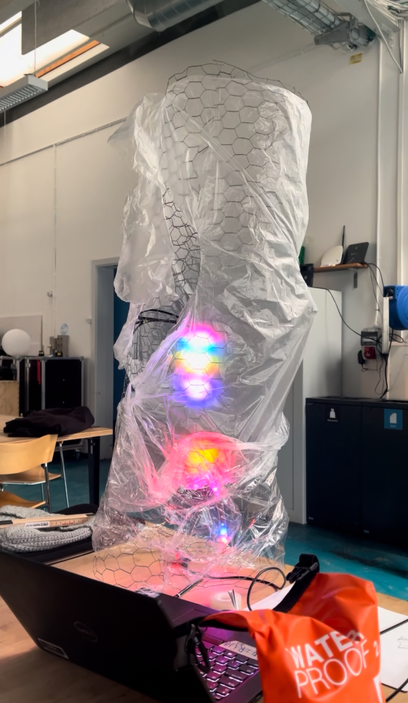
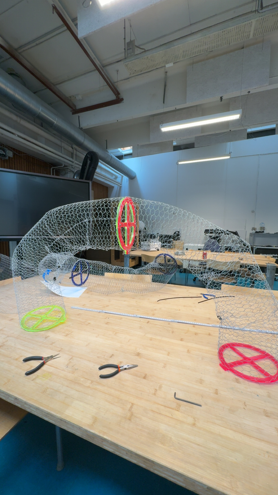
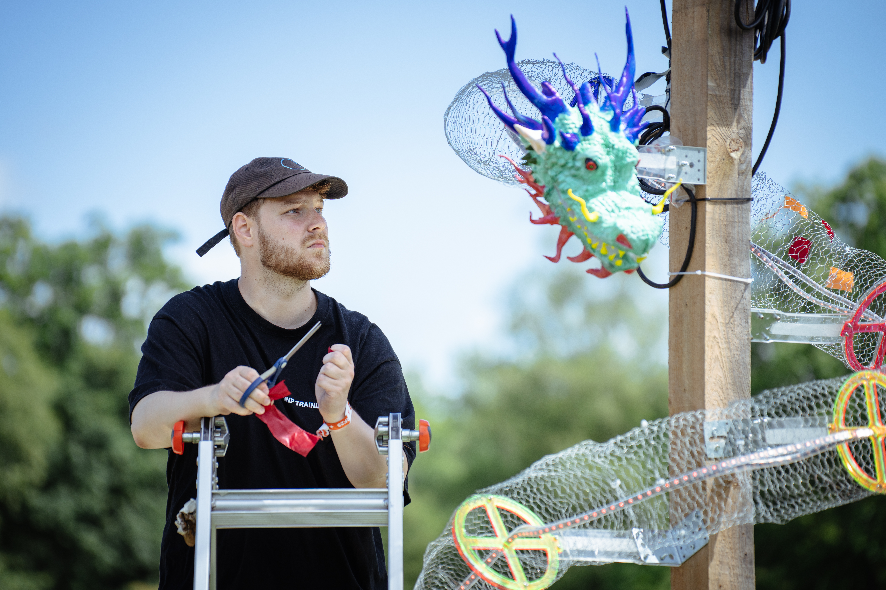

Roskilde Festival · 2025
Den lysende drage
En større kreativ installation med fokus på lys, formgivning og atmosfære i festivalens visuelle miljø. Dragestrukturen kombinerede dynamiske lysanimationer med organiske formsvar for at skabe et blikfang i nattetimerne.
Processen
Fra koncept til dragens flugt
FASE 1 · FORM & DESIGN
3D-Modellering & Design
De indledende skitser og 3D-modeller af dragens anatomi. Der blev lagt vægt på at skabe en let, men stærk konstruktion, som ville se dynamisk ud både om dagen og oplyst om natten.
FASE 2 · LYSSTYRING & ELEKTRONIK
Programmering af lysmønstre
Udvikling af tilpassede lyssekvenser, der efterligner dragens "åndedræt" og energibølger langs kroppen. Elektronikken blev samlet og testet på værkstedet.

FASE 3 · FABRICATION & MONTERING
Konstruktion & Skelet
Bygning af det bærende skelet og montering af de lysdiffunderende materialer. Hele strukturen blev sikret mod regn og vind til udendørs brug.

FASE 4 · FESTIVALINSTALLATION
Opstilling på Roskilde Festival
Endelig montering og opstilling på festivalpladsen, hvor dragen lyste op og skabte en helt særlig stemning for de forbipasserende gæster.

Teknikken
Arduino Kildekode
drage_styring.ino
// Indsæt din Arduino-kode til dragen herunder:
#include
#define PIN 9
#define NUMPIXELS 270
Adafruit_NeoPixel pixels(NUMPIXELS, PIN, NEO_GRB + NEO_KHZ800);
void setup() {
pixels.begin();
pixels.clear();
}
void loop() {
// Changes the delay in all for loops
int del = 5;
for (int i = 0; i < NUMPIXELS; i++)
{
pixels.setPixelColor(i, pixels.Color(255, 0, 0));
pixels.show();
delay(del);
}
for (int i = 0; i < NUMPIXELS; i++)
{
pixels.setPixelColor(i, pixels.Color(255, 255, 255));
pixels.show();
delay(del);
}
}
}